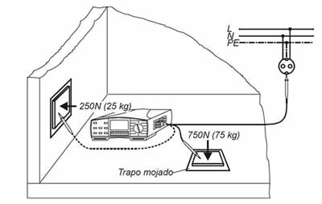
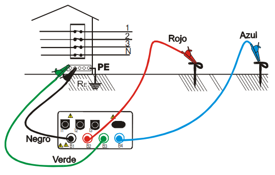
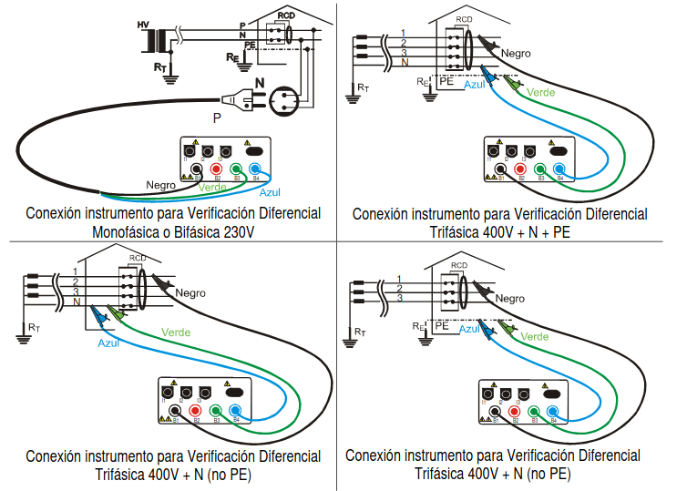
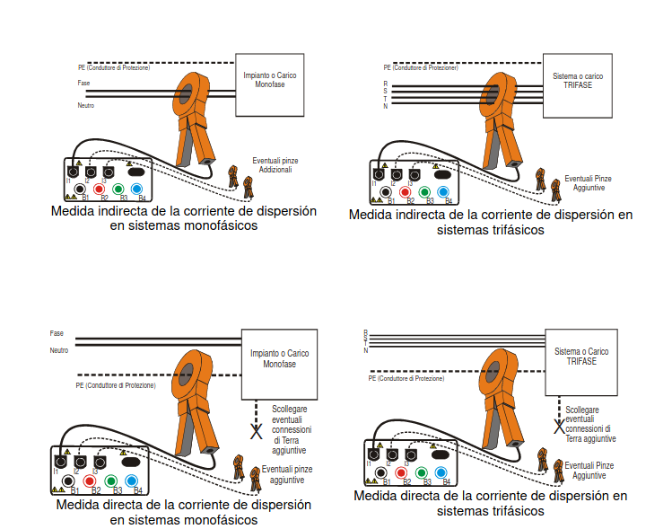
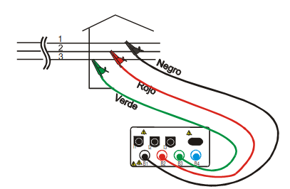

UT6 - Posada en servei de les instal·lacions ============================================ 1. Aparells de mesura 2. Inspecció inicial de les instal·lacions 3. Verificació de les instal·lacions elèctriques 4. Documentació per a la posada en servei de les instal·lacions elèctriques 1.- Aparells de mesura ---------------------- ### 1.1.- Categoria bàsica - Tel·luròmetre: + Mesura terres + Utilitza mètode de Wenner - Mesurador d'aïllament: + Informalment se l'anomena megger (marca comercial) - Multímetre i pinça amperimètrica + Mesura tensió i intensitat + Resistència + Alguns poden mesurar capacitat i coeficients d'autoinductància. - Mesurador de corrents de fuga. + Sol estar integrat a les pinces amperímètriques. + Ha de mesurar intensitat per damunt de 1mA - Detector de tensió + Els desengramponadors «buscapols» no son un mètode vàlid + Mira la tensió entre dos punts - Analitzador-registrador de potència i energia per a corrent alterna trifàsica - Verificador de la sensibilitat de dispar dels diferencials - Verificador de continuïtat - Mesurador d'impedància - Luxómetre ### 1.2.- Categoria especialista - Analitzador de xarxes, harmònics i pertorbacions de xarxa - Elèctrodes per a la mesura de la resistència de l'aïllament del terra - Comprovador del dispositiu de vigilància d'aïllament dels quiròfans ### 1.3.- Instal·ladors de telecomunicacions: ### Tipus A: - Instal·lacions - posada a punt i manteniment de RTV - telefonia - Telecos per cable - porteria - control d'accessos. Es necessita: - Multímetre - mesurador de terra - mesurador d'aïllament - mesurador de camp amb anàlisi espectral i mesures d'error sobre QPSK y COFDM i simulador de freqüència mitja #### Tipus C: - Videovigilància - CCTV - Megafonia - Microfonia - Sonorització i muntatge d'estudis de producció audiovisual Es necessita: - Sonòmetre - Multímetre - mesurador d'aïllament - mesurador de terra - mesurador d'intensitat de camp, amb anàlisi espectral i mesurador d'impedàncies en audiofreqüència #### Tipus F - Xarxes de telecomunicacions de fibra, cable coaxial, UTP cat 6 - Integració dels serveix del tipus A en aquestes xarxes - Integració amb la domòtica Es necessita: - Multímetre - mesurador de terra - mesurador d'aïllament - mesurador de camp amb anàlisi espectral i mesures d'error sobre QPSK y COFDM i simulador de freqüència mitja - mesurador relectiu de potència òptica i test de fibra òptica monomodo FTTH (fiber to the home) - certificador de xarxes cat 6 - fusionador 2.- Inspecció inicial en les instal·lacions ------------------------------------------- - A part de la revisió a la que està obligat l'instal·lador, en segons quin tipus d'instal·lacions de «especial rellevància». + Industries de més de 100kW + locals de pública concurrència + Locals amb risc d'incendi i explosió + Locals mullats amb potència instal·lada superior a 25kW + locals amb risc d'incendi i explosió excepte garatges de menys de 25 places + Piscines amb potència instal·lada de més de 10kW + Quiròfans i sales d'intervenció + Instal·lacions d'enllumenat exterior, amb més de 5kW de potència Aquestes instal·lacions han de ser sotmeses a una revisió periòdica cada 5 anys. I les instal·lacions comuns a edificis de més de 100kW cada 10 anys. ### 2.1.- Procediment d'inspecció En base a les observacions de l'inspector s'emetrà un acta: - Favorable: Sense defectes greus o molt greus - Condicionada: + Es dona un termini en les periòdiques + No es pot posar en servei les noves - Negativa: + Es remet immediatament a industria i la instal·lació no pot continuar en servei. ### 2.2.- Classificació de defectes - Molt greus: un perill imminent (contacte directe), o un perill probable amb conseqüències a un gran nombre de persones (publica concurrència, locals amb risc d'incendi i explosió), o amb conseqüències molt greus (quiròfans) - Greus: La gran majoria de defectes que tenguin un risc però sense la perillositat dels molt greus - Lleus: Aquells que no suposen un risc ni un mal-funcionament 3.- Verificació de les instal·lacions elèctriques ------------------------------------------------- ### Comprovacions visuals + Protecció contra contactes directes e indirectes + Barreres tallafocs + Secció del cablejat + Existència i calibrat dispositius de protecció (ID, MT, FUS, etc.) + Dispositius de mando i seccionament adecuats + Dispositius per a les influències externes + Identificació de conductors + Existència d'esquemes i informació del local + Identificació dels circuits + Verificació de les connexions. ### Mesura de la continuïtat dels conductors de terra i de les unions equipotencials **Procediment:** Establir un punt de posada a terra de confiança, realitzar mesures d'equipotencialitat lligant punts posats a terra consecutivament. **Valors d'acceptació:** No hi ha d'haver faltes de continuïtat ### Mesura de la resistència d'aïllament **Procediment:** Es deixaran els circuits a mesurar sense tensió i amb els receptors desconnectats, es curtcircuitaran neutre i fases. Es farà una mesura de l'aïllament entre els conductors i terra **Valors d'acceptació:** valors de 500kΩ o superiors per a tensions de servei inferiors a 500V Aquest procediment també val per a comprovar la separació de MBTS i circuits 230/400V ### Mesura de la resistència d'aïllament de sòls i parets no conductores Considerem que un sòl o una paret és aïllant quan presenten una resistència d'aïllament no inferior a: - 50 kΩ, si la tensió nominal de la instal·lació no és superior a 500 V; i - 100 kΩ, si la tensió nominal de la instal·lació és superior a 500 V. Aquestes mesures de resistència d'aïllament tenen una aplicació en les ITC-BT-27 i 38. Segons la ITC-BT-27 les **banyeres i dutxes metàl·liques** han de considerar-se parts conductores externes susceptibles de transferir tensions, i per tant **han de connectar-se equipotencialment al conductor de protecció** al qual es connectaran també la connexió a terra de les bases de corrent, les parts conductores accessibles dels equips de classe 1 que estiguin instal·lats en els volums de protecció 1, 2 i 3, així com qualsevol altra canalització metàl·lica que estigui a l'interior d'aquests volums. Aquesta prescripció per a banyeres i dutxes metàl·liques **no és aplicable si es demostra que aquestes parts estan aïllades de l'estructura** i d'altres parts de l'edifici, per a això la **resistència d'aïllament** entre la superfície metàl·lica de banys i dutxes i l'estructura de l'edifici ha de ser com a **mínim de 100 kΩ**. Un altre cas particular és la ITC-BT-38 sobre **instal·lacions elèctriques en quiròfans** i sales d'intervenció que estableix que els seus sòls seran del tipus antielectroestàtic i la seva resistència d'aïllament no haurà d'excedir d'1 MΩ, tret que s'asseguri que un valor superior, però sempre inferior a 100 MΩ, no afavoreixi l'acumulació de càrregues electroestàtiques perilloses. Es faran 3 mesures com a mínim: - La primera a menys d'un metre d'un element conductor. - La segona i tercera a distancies superiors arbitraries - Si la superfície és important, es faran més mesures. S'utilitzarà una placa metàl·lica de 250x250mm a sobre d'una tela humida. A sobre es situarà una càrrega de 750N si és una mesura del sòl o 250N si és d'una paret. Es farà una mesura de 500V CC, entre el conductor de protecció i l'electrode. <p align="center"><p></p></p> ### Assaig dielèctric Aquest assaig es realitzarà per a cadascun dels conductors inclòs el neutre o compensador, en relació amb terra i entre conductors, excepte per a aquells materials en els quals es justifiqui que hagi estat realitzat aquest assaig prèviament pel fabricant. Per aquest motiu aquest assaig pràcticament no es realitza pels instal·ladors, qui a més no han de disposar obligatòriament dels equips necessaris per a dur-lo a terme. ### Mesura de la resistència de toma de terra Personal tècnicament competent efectuarà la comprovació de la instal·lació de connexió a terra, almenys anualment, en l'època en la qual el terreny estigui mes sec. Per a això, es mesurarà la resistència de terra, i es repararan amb caràcter urgent els defectes que es trobin. #### Mesura a 3 punts <p align="center"><p></p></p> MESURAMENT: - Seleccionar en l'instrument de mesura el mètode a 3 punts. - Realitzar les connexions tal com s'indica en la figura. - La distància entre les dues piquetes de prova i entre el terra ha de ser com a mínim 5 vegades la diagonal del sistema de terra en examen (un mínim de 5 metres de distància entre cada punt). També és molt important que les piquetes estiguin clavades en línia el més recta possible a partir del punt de terra en examen, respectant l'esquema indicat (no es pot clavar una piqueta a un costat del terra en examen i l'altra piqueta a l'altre costat). - Els cables NEGRE I VERD es connectaran al sistema de terra a mesurar. - El seccionador que desconnecta el terra de la resta de la instal·lació ha d'estar obert perquè el resultat del mesurament no es vegi influenciat per les diferents masses estranyes presents en aquesta instal·lació. #### Mesura a 2 punts Es pot fer una mesura de terra a dos punts si no es disposa de terreny a on clavar les piquetes, utilitzant el neutre com a segon elèctrode, no obstant és un mètode que pot donar mesures molt errònies si les resistències del dos elèctrodes són similars. ### Comprovació dels interruptors diferencials. <p align="center"><p></p></p> - Amb el botó F1 es selecciona el tipus de prova a realitzar: AUTO,x½, x1, x2,x5, o Ra . La prova AUTO és la més recomanable perquè comprova totes les característiques de funcionament del RCD quant a temps de dispar. No obstant això, es poden realitzar cadascuna de les proves de temps de tret manualment. - Amb el botó F2 seleccionem la intensitat de defecte del diferencial a comprovar: 10, 30, 100, 300 o 500 mA - Amb el botó F3 seleccionem el tipus de diferencial a comprovar - Amb el botó F4 es selecciona el límit de la tensió de contacte admesa: - 25 V per a locals humits - 50 V per a locals secs ### Mesura de la resistència a terra en bucle i tensió La mesura de la impedància en bucle, és la resistència acumulada de la línia que ve del transformador fins a l'elèctrode del mesurador, més la resistència de la línia de terra de la instal·lació, més la resistència de la línia de la terra de servei (del neutre) del transformador, per on es tanca el circuit. Obtinguda aquesta resistència es pot acotar el valor màxim de la resistència a terra de la instal·lació considerant pràcticament nul·les la resta de resistències (inclosa la terra del transformador). D'aquesta manera la tensió de contacte es calcula com la sensibilitat de l'interruptor diferencial multiplicat per la resistència de terra. - Amb la mateixa configuració anterior, es selecciona amb el botó F1 el tipus de prova Ra. - Una vegada configurat l'instrument i realitzada la connexió corresponent, es prem el botó START/STOP i començarà la prova. ### Mesura de la corrent de fuga Es defineix corrent de fugida, com aquella que, en absència de fallades, es transmet a terra o als elements conductors del circuit. La suma dels corrents de defecte i de fugida és la que provoca el tret dels interruptors diferencials. Per això, és possible que sense l'existència d'un defecte en la instal·lació, es produeixi un tret de l'interruptor diferencial per un excés de corrents de fuga. Això és habitual en les instal·lacions on existeixen molts equips electrònics (com a ordinadors). Per això, és convenient efectuar per a cadascun dels circuits protegits amb interruptors diferencials la mesura de corrents de fugida, a la tensió de servei de la instal·lació i amb els receptors connectats. Els valors mesurats han de ser igualment inferiors a la meitat de la sensibilitat dels interruptors diferencials instal·lats per a protecció de cadascun dels circuits. Mitjançant aquest mètode és possible detectar un circuit o receptor que presenti un defecte d'aïllament o que tingui un corrent de fugides superior a la de la sensibilitat dels interruptors diferencials de la instal·lació, arribant en casos extrems a disparar l'o els diferencials de protecció, i en aquest cas seria necessari pontejar-los per a poder localitzar el circuit o receptor avariat. La mesura s'efectua mitjançant una tenalla amperimètrica de sensibilitat mínima de 1mA, que es col·loca abraçant els conductors actius (de fase i el neutre), de manera que la tenalla mesura la suma vectorial dels corrents que passen pels conductors que abraça, si la suma no és zero la instal·lació té una intensitat de fugida que circularà pels conductors de connexió a terra dels receptors instal·lats aigües avall del punt de mesura. Aquest tipus de pinces solen portar un filtre que ens permet fer la mesura a la freqüència de xarxa (50Hz) o per a intensitats d'alta freqüència. No s'ha confondre el corrent de defecte amb el corrent de fuga, ja que aquesta última es dona en major o menor mesura en tota mena de receptors en condicions normals de funcionament, sobretot en receptors que portin filtres per a combatre interferències, com els formats per condensadors connectats a terra . Un exemple són els balastos electrònics d'alta freqüència associats als tubs fluorescents. <p align="center"><p></p></p> Connectar la pinça en qualsevol de les tres entrades (I1, I2 o I3). Prement cíclicament les Tecles Funció F1, F2, F3 es permet seleccionar el tipus de magnitud de lectura en les entrades corresponents. En el present cas seleccionarem mA. La connexió de la pinça haurà de realitzar-se com indiquen les anteriors figures, depenent del tipus d'instal·lació. S'han d'envoltar tots els conductors actius menys el terra (mètode indirecte) o només el conductor de terra (mètode directe). ### Seqüencies Introdueixi les entrades de l'instrument: NEGRE, ROJO i VERD. Es pot emprar el cable shucko en dotació per a realitzar les proves directament o els cables per separat juntament amb els cocodrils per a treballar sobre quadres elèctrics. A continuació es mostren els esquemes de connexió. <p align="center"><p></p></p> Algunes càrregues (ventiladors, extractors, motors, etc.) requereixen una seqüència de fases determinada i poden veure's seriosament danyades si les hi connecta de manera inversa. Per aquest motiu és necessari verificar aquesta seqüència abans de realitzar la connexió. ### Assajos funcionals Els assajos funcionals tenen com a objectiu comprovar el correcte funcionament d'una instal·lació entenent aquesta com una caixa negre. És a dir a partir d'una serie d'inputs correctament escollits per tal d'assumir que es prova la instal·lació en tots els seus estats possibles s'han d'obtenir una serie d'outputs concrets. 4.- Documentació per la posada en servei de les instal·lacions elèctriques -------------------------------------------------------------------------- Els principals documents per a la posada en servei de les instal·lacions elèctriques són: - El certificat d'instal·lació (també anomenat butlletí): El signa l'instal·lador, es requereix en totes les posades en servei. - El projecte: Redactat per un tècnic competent. Normalment un enginyer industrial o enginyer tècnic industrial. Es requereix per a instal·lacións amb un grau més elevat de risc. - La direcció d'obra (més aviat el final d'obra): Signada per un tècnic competent. Normalment un enginyer o enginyer tècnic. Que validarà que tot s'ha fet com indica al projecte, o que si hi ha canvi aquests s'han vist reflectits i s'ajusten a normativa. Sempre que hi hagi projecte hi ha d'haver final d'obra. - El certificat d'inspecció: Si la instal·lació pertany a un grup de tramitació amb un risc més elevat haurà de ser inspeccionat per un Organisme de Control Autoritzat (OCA).